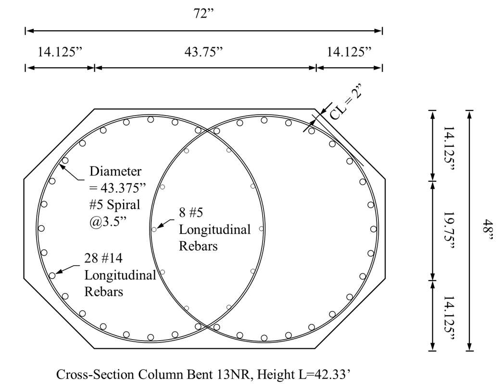

Hayward Bridge
As shown in Figure @fig4, the DMP operations for near real-time comprehensive assessment include updating the model with Machine Learning (ML) and optimization tools. To achieve these objectives in a systematic manner, the task of Hayward bridge global modeling is divided into three subtasks (Figure 1) as follows:
Model development;
Model updating using conventional optimization algorithms (e.g., [@sanayei2015automated]); and
Model updating with ML-enhanced optimization (e.g., [@meo2004optimal]).
Model development includes the following:
Completing the global Finite Element (FE) model (including columns, cap beams, bridge decks, abutments, in-span hinges, and the piles, as shown in Figure 2); and
Conducting gravity load analysis, eigenvalue analysis, and dynamic analysis for earthquake loads where sensor data are available.
These steps of model development have been completed, except the pile modeling, which is in progress. The following Sub-Sections 0.1 to 0.3 summarize the modeling process.
Model Summary
The Hayward bridge is a cast-in-place prestressed concrete (CIP/PS) box girder highway bridge with 14 spans ranging in length from 92 to 197 feet, supported on single, double and triple column bents as well as seat-type abutments. The plan shape is curved and the east end of the bridge main line is split into two lines, denoted NE1 for the North-East line, and NR1 for the South-East line. The spans of the main line and the NE1 line are supported on double or triple column bents with octagonal section shapes, Figure 3. On the other hand, the spans of the NR1 line are supported on single-column bents with interlocking wide octagonal section shapes, Figure 4.

The global model of the Hayward bridge is developed in OpenSees [@mckenna2010opensees]. The geometry and material properties of the bridge are consistent with those listed in Appendix [appendix:D], for example, \(f'_{ce} = 5.0\) ksi is generally adopted, but variations follow notes on the as-built drawings. Moreover, such material properties will be adjusted based on planned concrete core tests (refer to end of Section [sec:4]).
Columns are modeled as nonlinear beam-column (nonlinearBeamColumn) elements with fiber-discretized sections, \(n_p=4\) integration points, and bases fixed in all degrees of freedom (dof), three translations and three rotations (or as discussed in Section 0.3 for the bents not fixed at their bases). Most of the columns are octagonal-shaped fiber-discretized sections. The interlocking wide octagonal section columns on the NR1 line are instead, for simplicity, represented by circular fiber-discretized sections with diameter equal to the larger width of the interlocking wide octagonal section, i.e., the 72-inch width in Figure 4 for example. Comparison of different section shapes was used to confirm that this assumption has a minimal effect on the model behavior. In future refinement of the model, the interlocking wide octagonal section columns will be modeled with the actual section shapes.
Materials of the column fibers are inelastic steel (for reinforcing bars, rebars) and concrete (core and cover) materials. The reinforcing steel is modeled with Steel02 (Giuffrè-Menegotto-Pinto (GMP) steel material object with isotropic strain hardening, Figure 5 [@mckenna2010opensees]) with \(f_{ye} = 68\) ksi, \(E_{s} = 29,000\) ksi, and strain-hardening ratio \(b = 0.02\). Inelastic cover (unconfined) concrete is modeled with Concrete02 (concrete material object with tensile strength and linear tension softening, Figure 6 [@mckenna2010opensees]) with \(f'_{cc} = f'_{ce} = 5\) ksi, \(\epsilon_{cc} = \epsilon_{c0} = 0.002\), \(f_{cu} = 0.1f'_{ce} = 0.5\) ksi, \(\epsilon_{cu} = \epsilon_{sp} = 0.005\), \(\lambda = 0.1\), \(f_t = 7.5\sqrt{f'_{ce}}\), where \(f_t\) & \(f'_{ce}\) in psi, and \(E_t = E_c/5\), where \(E_c = 57,000\sqrt{f'_{ce}}\), and \(E_c\) & \(f'_{ce}\) in psi. It is noted that signs, to distinguish between compression and tension parameters, are not included herein where they are understood from the context, e.g., as shown in Figure [fig:hwd-mats].
Inelastic core (confined) concrete is modeled with Concrete02 with \(f'_{cc}\), \(\epsilon_{cc}\), \(f_{cu}\), and \(\epsilon_{cu}\) calculated by Mander’s confined concrete model [@mander1988theoretical], thus varying by column due to dimensions and reinforcing steel detailing. Other parameters (not considered for or different from the cover concrete) include \(f_t = 7.5\sqrt{f'_{cc}}\), where \(f_t\) & \(f'_{cc}\) in psi. Furthermore, the material definition incorporates a modified ultimate (crushing) strain-stress pair, \(\left(\epsilon_{cuu}, f_{cuu}\right)\), calculated as follows: \[f_{cuu} = 0.15f'_{cc},\] \[\epsilon_{cuu} = \epsilon_{cu}+\left(\epsilon_{cu}-\epsilon_{cc}\right) \times \frac{\left(f_{cuu}-f_{cu}\right)}{\left(f_{cu}-f'_{cc}\right)}.\] In other words, the line between \(\left(\epsilon_{cc}, f'_{cc}\right)\) and \(\left(\epsilon_{cu}, f_{cu}\right)\) is extrapolated to \(f_{cuu}\) (Figure 7). This change, i.e., from \(\left(\epsilon_{cu}, f_{cu}\right)\) to \(\left(\epsilon_{cuu}, f_{cuu}\right)\), was necessary because the lower crushing strength of \(f'_{cuu}\) is more realistic in capturing the negative slope of the stress-strain relationship for strength degradation and residual strength estimation. In fact, use of the original crushing strain-stress pair, \(\left(\epsilon_{cu}, f_{cu}\right)\), resulted in failures to calculate compatible element forces and deformations at the column elements during equation solving of the dynamic analysis.
An important modeling detail is that at the top of each column, there is an intermediate node which is connected by a “rigidLink beam” joint offset to the center of the cap beam. Another noteworthy modeling aspect for the columns is the modeling of the pins at either the top or the bottom of the columns, as explained in Section 0.3.
Cap beams are modeled as elastic beam-column (“elasticBeamColumn”) elements with cross section properties computed from or read off the as-built drawings. The flange of the cap beam is incorporated into the cross section properties. Bridge decks are modeled as elasticBeamColumn elements with cross section properties computed from or read off the As-Built Drawings. Each span is discretized into five elements, i.e., there are four “intermediate” nodes to interpolate the curved plan shape of each span of the bridge deck, as shown in Figure 8.
The bridge abutments are modeled as rigid elements (“rigidElement”) with end boundary conditions defined by zeroLength spring elements that incorporate the effect of Rayleigh damping. The stiffness of these springs are explicitly calculated in the longitudinal, transverse, and vertical directions based on the “Simplified Abutment Model” proposed by [@kaviani2012seismic] (Figure [@fig:hwd-abd]). Rotational springs are specified with zero stiffness and spring ends are completely fixed in all 6 dofs. The skew reduction factor, \(R_{sk}\), which decreases the abutment stiffness exponentially for higher skew angles, as defined in the Caltrans Seismic Design Criteria Version 2.0 [@caltrans2019seismic; @kaviani2012seismic], is assumed as \(R_{sk} = 1\). A more representative value for \(R_{sk}\) will be employed in future refinement of the model.
The transverse, longitudinal, and vertical abutment spring properties are illustrated in Figure [fig:hwd-ab]. The current model includes only the initial stiffness (linear) portion of the spring behavior. The current initial stiffness at each abutment is approximated and it is to be updated in a future refinement of the model together with the addition of the nonlinear behavior of the springs as conducted in [@liang_ground_2020; @liang2016performancebased]. In the longitudinal direction, two nonlinear springs (modeled using an elastic-perfectly-plastic (EPP) backbone), one at each end, connected in series to gap elements, are used to model the passive backfill response and the expansion joint, respectively. In the transverse direction, the backfill-wingwall-pile system is modeled using an EPP backbone relationship, where the resistance of the shear keys is ignored for simplicity. The vertical response of the bearing pads and stemwall is modeled by two parallel springs. The first one represents the flexible portion of the elastomeric bearing pad in the vertical direction and the second one represents the rigid behavior of the abutment stemwall.
In-span hinges are modeled as linear elastic springs using zeroLength elements that incorporate the effect of Rayleigh damping. Similar to the abutment spring behavior, the in-span hinge spring behavior is nonlinear and only the initial stiffness (linear) potion of the spring behavior is currently included in the model. The initial stiffness in the longitudinal direction is zero, representing the slack in the restrainer rods, and almost rigid (very high stiffness of \(10^9\) kip/in) in the vertical direction, representing an approximation of the deck overhang behavior. The initial transverse stiffness is calculated as \(K_{ht} = V_N/0.05G\), where \(V_N = 11.3\sqrt{f'_c} \times A_{cv}\), \(f'_c\) in psi and \(V_N\) in lbs, \(G\) is the gap width between shear keys, and \(A_{cv}\) is the area of the shear key to deck interface [@megally2001seismic]. The dimensions \(G\) and \(A_{cv}\) vary from one in-span hinge to another. This calculated transverse stiffness represents the behavior of the shear keys. Nonlinear spring behavior is to be incorporated in a future refinement of the model.
Finally, piles and Soil-Structure-Foundation Interaction (SSFI) are not yet modeled. Instead, the column-pile interface is currently modeled as a fixed boundary condition. This modeling approximation will be relaxed in future refinements of the Hayward bridge global model.
Solution Procedure
The model uses a Newton-Raphson algorithm to solve the nonlinear equilibrium equations in both the gravity load and dynamic analyses. The deformations of the model elements are mapped in space by P\(-\Delta\) transformation. The gravity load analysis is performed using load control of 10 constant load increments of 0.1 each. The fullGenLapack solver is used for the eigenvalue analysis, and the first 8 modes are calculated. During dynamic analysis, Rayleigh damping of 3% in the transverse mode and 1% in the longitudinal mode is assumed. We note that these assumed damping ratios are smaller than the damping ratios observed by spectral analysis (6% in transverse, Figure 15, and 3% in longitudinal). However, these selections produce closer match in computed and measured acceleration responses. The reason for this, as well as potential participation of higher modes, are to be investigated during model updating. The time integrator is a Newmark transient integrator with parameters \(\alpha = 0.5\) and \(\beta = 0.25\) [@liang2016direct].
Column Pin Modeling
Column pin connections are routinely used for multi-column bents in typical CA highway bridge structures. The most common column pins are rebar hinges where the column longitudinal rebars are terminated near the connection and a smaller concentric rebar cage is placed within the connection to transfer lateral loads via interface shear while releasing most of the bending moment. A reduced diameter concrete ring, relative to the column diameter, at the pin transfers the compressive axial load while allowing for rotation (Figure 13). The boundary conditions of all column ends are indicated in the bridge summary presented in Appendix [appendix:D].
Three versions of Hayward bridge global model are developed and summarized as follows:
M1: All connections are rigid.
M2: All locations identified as pin in the summary table (Appendix [appendix:D]) are modeled as pin (bending moment release).
M3: Mixed rigid/pin arrangement is used, with the following steps:
Compute flexure capacity of the pin locations using a plain concrete section (neglecting the small rebar cage in the pin by assuming it has negligible flexural capacity contribution), i.e., \(M_c = \left.\left(f_{ct} \times I\right)\right/c\), where \(M_c\) is the bending moment capacity, \(f_{ct}\) is the tensile strength of concrete, \(I\) is the gross moment of inertia of the cross-section, \(c=D/2\), and \(D\) is the cross-section diameter.
Compute the gravity \(DCR\) at the pin locations, where \(DCR\) is the Demand to Capacity Ratio, the Demand is the bending moment from gravity analysis, and the Capacity\(=M_c\). It is noted that for gravity bending moment demand on the top pin connection, we need to consider the load effects after accounting for the post-tensioning force in the superstructure (longitudinal direction) and bent cap (transverse direction). This will be accounted for in future refinement.
Assign a bending moment release if the gravity \(DCR > 1\).
Use a rigid connection if the gravity \(DCR \leq 1\).
For \(DCR \leq 1\), add a zero-length plain concrete element at the potential pin location to simulate forming a pin during moderate/high intensity ground motion. This step is currently in progress.
Comparison of the natural periods (three main modes, Figure 14, extracted from the first eight modes of vibration, as listed in Table 1) of vibration of the three model versions, discussed above, against those identified from the accelerometers on the Hayward bridge are shown in Table [@tbl:hwd-sys-id]. It is observed that M3 model is the most realistic with closest fundamental periods to the identified ones. The objective of the second sub-task of the global modeling, model updating using conventional optimization algorithms, is to improve any mismatch between the computed and identified periods. Computed longitudinal and transverse responses at the top of Bent 4 (refer to Figure [fig7]) from dynamic analysis, which is conducted using the measured accelerations at the bottom of the columns during the Mw 4.4 Berkeley earthquake in 2018 as ground motion input, are compared against the measured data in Figure 15. The computed longitudinal response is in reasonable agreement with the measured response. However, the computed transverse response needs to be improved with model updating for better match with the measured response.
| Mode # | 1 | 2 | 3 | 4 | 5 | 6 | 7 | 8 |
|---|---|---|---|---|---|---|---|---|
| Value [s] | 1.264 | 1.084 | 1.053 | 1.022 | 0.993 | 0.886 | 0.823 | 0.679 |
| Direction | M1 (All rigid) | M3 (Mixed rigid/pin) | M2 (All pin) | Identified |
|---|---|---|---|---|
| Transverse | 0.82 [-28%]1 | 1.26 [+11%] | 1.49 [+31%] | 1.14 |
| Longitudinal | 0.92 [-5%] | 1.08 [+11%] | 1.56 [+61%] | 0.97 |
| Torsional | 0.64 [-5%] | 0.89 [+33%] | 1.07 [+60%] | 0.67 |
Model Ouputs
The analyses performed using the Hayward bridge global model and the recorded results include the following:
Gravity load analysis, producing computed total loads from gravity at boundary conditions (fixed ends of columns and abutments) and column ends. As mentioned above, for gravity bending moment demand, we need to consider the load effects after accounting for the post-tensioning force in the superstructure (longitudinal direction) and bent cap (transverse direction). This will be accounted for in future refinement. These computed loads are used to perform the following comparisons:
Compare total vertical force at boundary conditions to computed approximate weight of bridge; and
Compare total bending moments at column ends with computed bending moment capacity of unreinforced sections.
Eigenvalue analysis, producing computed natural periods of vibration and mode shapes, e.g., Figure [@fig:hwd-mdsp]; and
Dynamic analysis for earthquake loads, producing time series acceleration response and comparison to sensor output, e.g., [@fig:16].
Results from different simulations using datasets recorded from the sensors on the Hayward bridge, refer to Table [table1], are under development. These results and associated discussions will be included in future updates of this progress report.
error = Mi-Identified/Identified %, \(i = 1,2, \text{or} 3\)↩︎